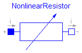
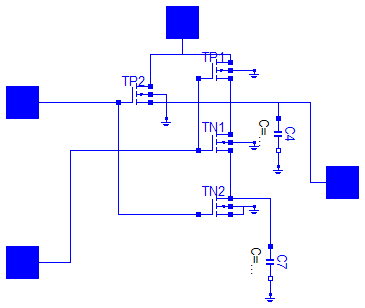

This package contains utilities ...
model RealSwitch Ideal.ControlledIdealCommutingSwitch S(level=2.5); Basic.Resistor R(R=0.01); Interfaces.Pin p; Interfaces.Pin n1; Interfaces.Pin n2; Interfaces.Pin control; equation connect(p, R.p); connect(R.n, S.p); connect(n1, S.n1); connect(n2, S.n2); connect(control, S.control); end RealSwitch;

| Name | Default | Description |
|---|---|---|
| Ga | [S] | |
| Gb | [S] | |
| Ve | [V] |
model NonlinearResistor "Chua's resistor"
extends Interfaces.OnePort;
parameter SI.Conductance Ga;
parameter SI.Conductance Gb;
parameter SI.Voltage Ve;
equation
i = if (v < -Ve) then Gb*(v + Ve) - Ga*Ve else if (v > Ve) then Gb*(v - Ve)
+ Ga*Ve else Ga*v;
end NonlinearResistor;
model Transistor
Basic.Resistor rtb(R=0.05);
Basic.Resistor rtc(R=0.1);
Basic.Capacitor ct(C=1e-10);
Semiconductors.NPN Tr(
Bf=50,
Br=0.1,
Is=1e-16,
Vak=0.02,
Tauf=0.12e-9,
Taur=5e-9,
Ccs=1e-12,
Cje=0.4e-12,
Cjc=0.5e-12,
Phie=0.8,
Me=0.4,
Phic=0.8,
Mc=0.333,
Gbc=1e-15,
Gbe=1e-15,
Vt=0.02585);
Basic.Ground Ground1;
Interfaces.Pin c;
Interfaces.Pin b;
Interfaces.Pin e;
equation
connect(rtb.n, Tr.B);
connect(rtb.n, ct.p);
connect(ct.n, Ground1.p);
connect(Tr.C, rtc.p);
connect(rtc.n, c);
connect(b, rtb.p);
connect(Tr.E, e);
end Transistor;

The nand gate is a basic CMOS building block. It consists of four CMOS transistors.
model Nand "CMOS NAND Gate (see Tietze/Schenk, page 157)"
Semiconductors.PMOS TP1(
W=6.5e-6,
L=3.1e-6,
Beta=1.05e-5,
Vt=-1,
K2=0.41,
K5=0.8385,
dW=-2.5e-6,
dL=-2.1e-6);
Semiconductors.PMOS TP2(
W=6.5e-6,
L=3.1e-6,
Beta=1.05e-5,
Vt=-1,
K2=0.41,
K5=0.8385,
dW=-2.5e-6,
dL=-2.1e-6);
Semiconductors.NMOS TN1(
W=6.5e-6,
L=3.1e-6,
Beta=4.1e-5,
Vt=0.8,
K2=1.144,
K5=0.7311,
dW=-2.5e-6,
dL=-1.5e-6);
Semiconductors.NMOS TN2(
W=6.5e-6,
L=3.1e-6,
Beta=4.1e-5,
Vt=0.8,
K2=1.144,
K5=0.7311,
dW=-2.5e-6,
dL=-1.5e-6);
Basic.Capacitor C4(C=0.4e-13);
Basic.Capacitor C7(C=0.4e-13);
Basic.Ground Gnd;
Basic.Ground Gnd2;
Basic.Ground Gnd3;
Basic.Ground Gnd6;
Basic.Ground Gnd7;
Basic.Ground Gnd8;
Interfaces.Pin x1;
Interfaces.Pin x2;
Interfaces.Pin Vdd;
Interfaces.Pin y;
equation
connect(TN1.S, TN2.D);
connect(TN2.B, Gnd.p);
connect(TN2.D, C7.p);
connect(TN2.S, Gnd.p);
connect(TP1.S, TN1.D);
connect(TP1.G, TN1.G);
connect(C4.n, Gnd2.p);
connect(C7.n, Gnd3.p);
connect(TP2.B, Gnd6.p);
connect(TN1.B, Gnd7.p);
connect(TP1.B, Gnd8.p);
connect(TP2.G, x1);
connect(TP2.G, TN2.G);
connect(TN1.G, x2);
connect(TP2.S, TN1.D);
connect(TN1.D, C4.p);
connect(Vdd, TP1.D);
connect(TP2.D, Vdd);
connect(C4.p, y);
end Nand;